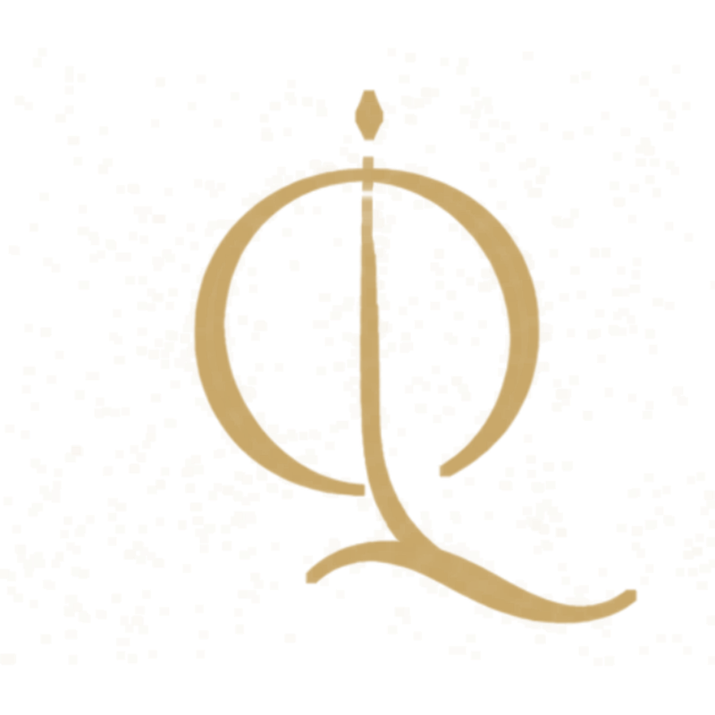
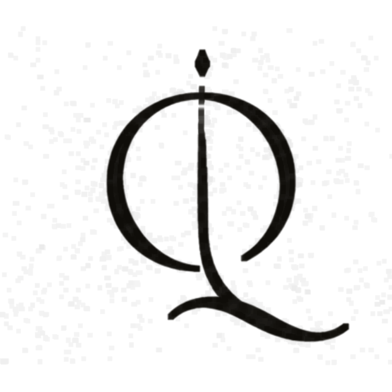

QUILL
PRESET
Synth Pad
◂ 014 ▸
Capture · Preserve · Transform
MIDI · LIVE
CAPTURE
the colour-pick
Draw any sound. Quill keeps its colour.

PRESS TO CAPTURE · ≤ 60 s
drag a file · or pick below
SOURCE
f₀ — · —
TONE · COLOUR
Synth Pad
REFINE
FROM A SONG
SAVED TONES
+ Save
✎
×
{{ c.label }}
TEMPO
◂
{{ tempoStr }}
▸
BPM
TIME
{{ tsigStr }}
METRO
COUNT-IN
LOOP
{{ takeStatus }}
PIANO ROLL
play keyboard / MIDI to record
● Rec
▶ Play
■ Stop
Clear
◌ Neural
♪ = timbre
GAIN
1.0
+ Style
⤓ MIDI
⤓ WAV
⇪ AUDIOTOOL
FILTER
tone
Brightness
+0.0
Air / Noise
2%
FILTER RESPONSE · SPECTRAL TILT
12 dB/oct
AMP ENVELOPE · TOUCH
ADSR · pick
Pick
0.50
VOICE
solo
Polyphony
16
Stealing
oldest
LFO · MOTION
vibrato
Depth
30 %
Rate
5.4 Hz
MASTER
output
Volume
-6.0 dB
OUTPUT · tanh soft-clip
ARTICULATION
the hand
No synth plays like a player. Quill does.
NOW PLAYING
pluck
GLIDE · PITCH CURVE
Intensity
Strum
28 ms
Slide
42 ms glide
LIBRARY · .tplib
Guitar · hammer & slide
● active
Upright bass · round pluck
load
Brass · swell & fall
load
To transform is to compose.
●
MIDI IN · connecting…
│
LATENCY
–
ms
│
VEL→LVL/BRT · PB→PITCH · CC1→VIB · CC64→SUS
◆
ENGINE · ♩ {{ tempoStr }} BPM
DEVICES
route your sound
⟲ RESCAN
✕
AUDIO INPUT
where Quill listens
{{ probeLabel }}
{{ d.name }}
{{ d.tag }}
AUDIO OUTPUT
where Quill plays
{{ d.name }}
MIDI INPUT
your keyboard / controller
{{ d.name }}
{{ d.status }}
ENGINE
{{ row.label }}
{{ row.value }}
EXPORT
✕
{{ row.label }}
{{ row.fmt }}
LIBRARY · PRESETS
✕
{{ it.name }}
{{ it.tag }}
TAKE 01 · EDIT
QUANTIZE 1/16
✕
QUANTIZE
DONE
PLAY
CAPTURE
Draw a sound, draw a hand — Quill keeps both.
the colour-pick
×
TIMBRE
the colour-pick
Record or drag a file → trim → analyse → name → save to Palette.
1
Source
REC ≤ 60s · or drag a file
2
Trim & audition
▶ 0:00 – 0:02.4
3
Analyse
f₀ PITCH
146.8 Hz
D3
HARMONICS
NOISE / AIR
18 %
breathy
Amber Guitar II
SAVE TO PALETTE
ARTICULATION
the hand
Drag a performance → auto-segment & classify → preview slide / strum → save as .tplib.
1
Drag a performance
MIDI or audio
2
Auto-segment & classify
pluck ×4
slide ×2
legato ×3
strum ×1
3
Preview motion
SLIDE CURVE
STRUM SPREAD
30 ms
Nylon · finger & slide
SAVE AS .tplib